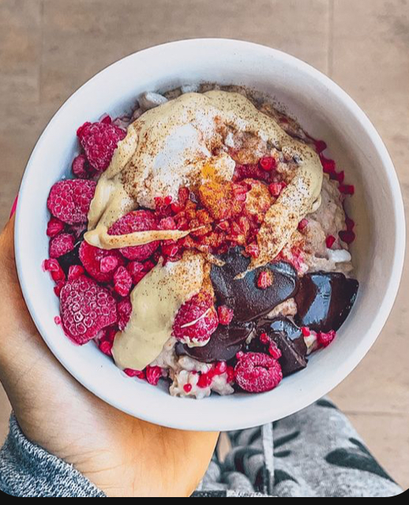
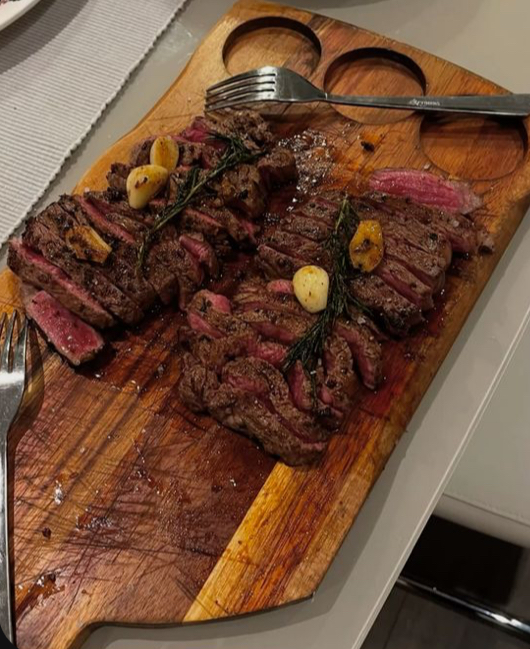
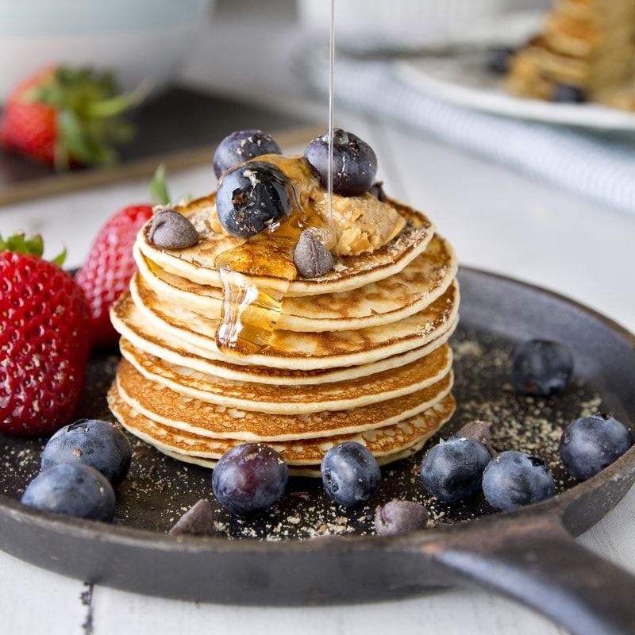
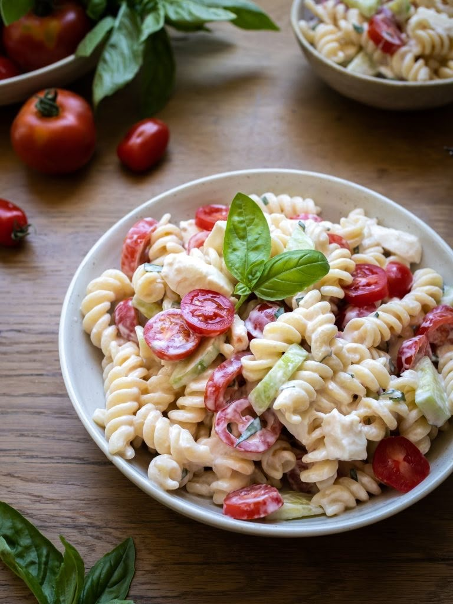
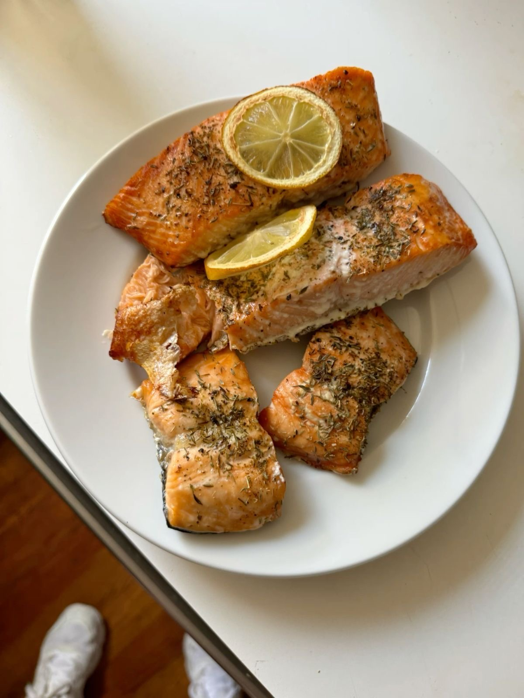
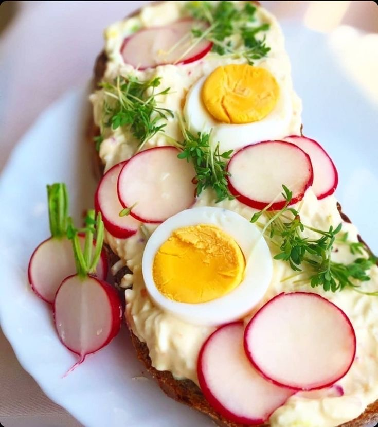
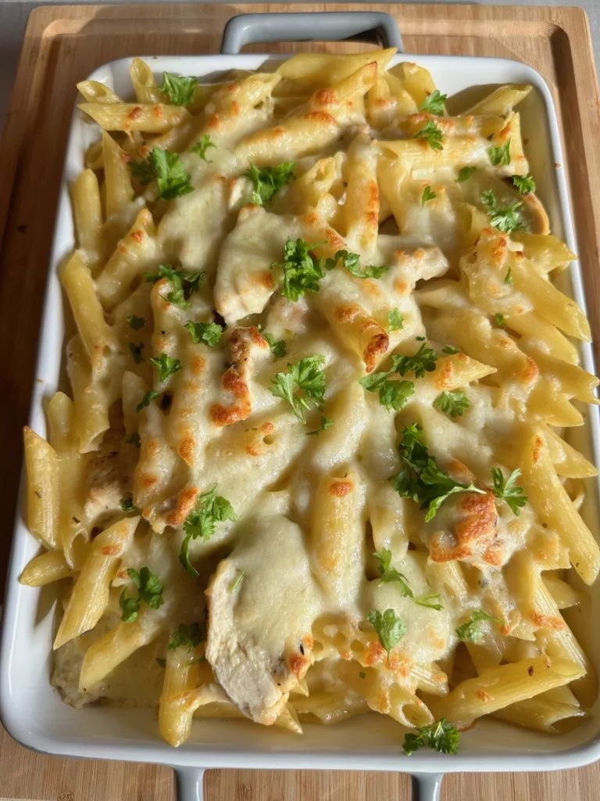

Den 1
- Snídaně: Ovesná kaše s banánem a arašídovým máslem
- Svačina: Smoothie s mlékem, ovocem a vločkami
- Oběd: Kuřecí maso s rýží a zeleninou
- Svačina: Jogurt s ořechy a medem
- Večeře: Těstoviny s tuňákem a sýrem

Den 2
- Snídaně: Chleba s máslem, šunkou a sýrem
- Svačina: Proteinový nápoj + banán
- Oběd: Hovězí guláš s těstovinami
- Svačina: Celozrnná houska s vajíčkem
- Večeře: Zapečené brambory se zeleninou a sýrem

Den 3
- Snídaně: Palačinky s tvarohem a džemem
- Svačina: Sušené ovoce a hrst ořechů
- Oběd: Losos s kuskusem a brokolicí
- Svačina: Jogurtový dezert
- Večeře: Rizoto s kuřecím masem a zeleninou

Den 4
- Snídaně: Tousty s avokádem a vejcem
- Svačina: Kefír a müsli tyčinka
- Oběd: Pečené kuře s bramborovou kaší
- Svačina: Tvaroh s ovocem
- Večeře: Zeleninová polévka s pečivem

Den 5
- Snídaně: Jogurt s granolou a ovocem
- Svačina: Banánový koktejl
- Oběd: Těstovinový salát s mozzarellou
- Svačina: Chléb se sýrem a šunkou
- Večeře: Fazolová směs s tortillou

Den 6
- Snídaně: Ovesné lívance s javorovým sirupem
- Svačina: Mléko a sušenky
- Oběd: Vepřová pečeně s rýží a mrkví
- Svačina: Tvaroh s medem
- Večeře: Cizrnový salát s pečivem

Den 7
- Snídaně: Vajíčka natvrdo s chlebem
- Svačina: Proteinová tyčinka a hruška
- Oběd: Hovězí steak s batáty
- Svačina: Smoothie s ovesnými vločkami
- Večeře: Zapékaný květák s bramborem